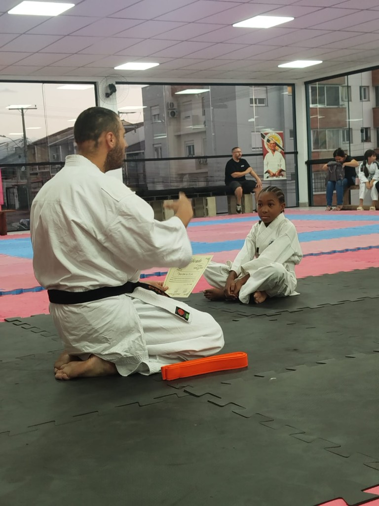
Aula experimental
Quer conhecer o Kyokushin antes de se matricular? Agende uma aula experimental pelo WhatsApp, vista um gi confortável ou roupas leves e venha sentir o tatame, o aquecimento e o jeito do Garyū Dojo.
Kyokushin Karate
Escola de Karate Kyokushin liderada pelo Sensei William de Souza — aulas em Alvorada e Porto Alegre, filiada à FGKKO e CBKKO.
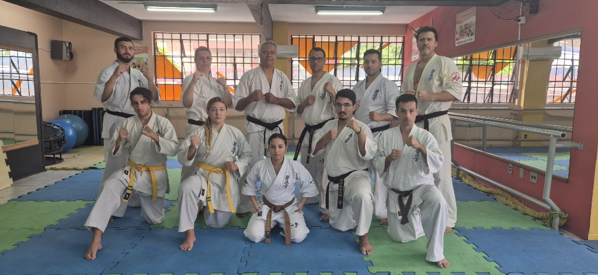
2 de maio de 2026
Seminário com o Shihan Henrique: ensino de diversas técnicas do Kyokushin — bases, kihon, kata e troca no tatame — para aprimorar o repertório e o entendimento da arte.
Saiba maisO Garyū Dojo reúne treino sério, tradição Kyokushin e um ambiente em que cada pessoa pode evoluir no seu ritmo, com orientação próxima do sensei.

Quer conhecer o Kyokushin antes de se matricular? Agende uma aula experimental pelo WhatsApp, vista um gi confortável ou roupas leves e venha sentir o tatame, o aquecimento e o jeito do Garyū Dojo.
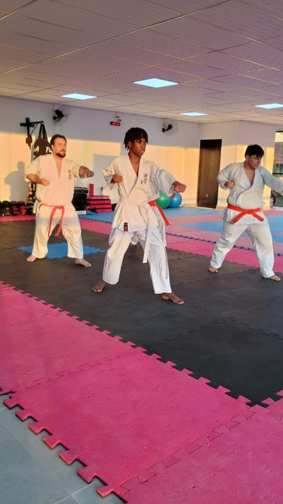
No tatame, cumprimentamos, ouvimos e treinamos com foco. O estilo exige constância e coragem, mas sempre dentro do respeito ao parceiro, ao sensei e ao dojo-kun — a base de tudo o que fazemos.
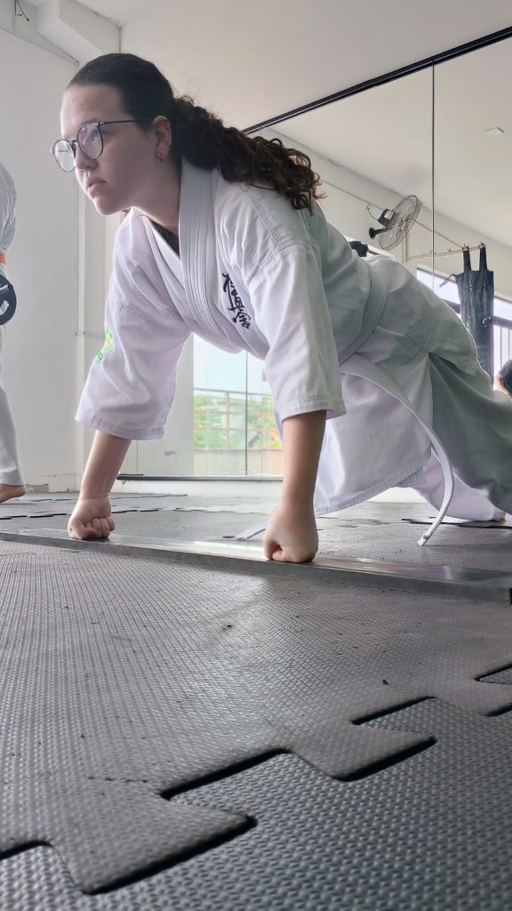
As aulas acontecem em academias parceiras com tatame, espelhos e equipamentos para kihon, kata e condicionamento. Turmas para diferentes idades e níveis — horários e vagas você confirma direto com o Sensei William no WhatsApp.
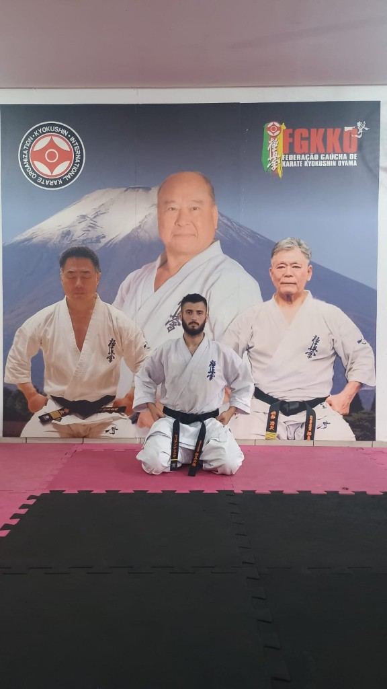
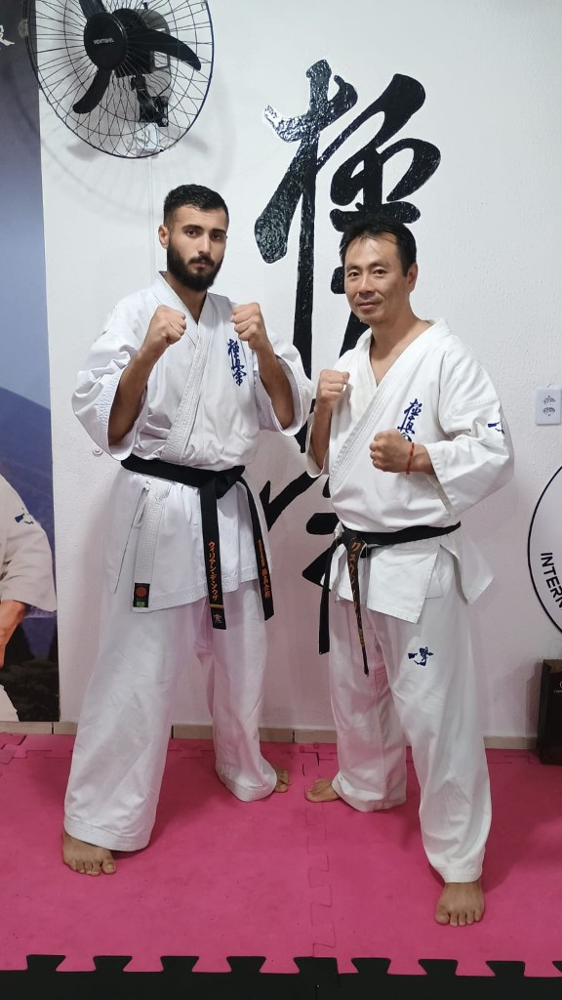
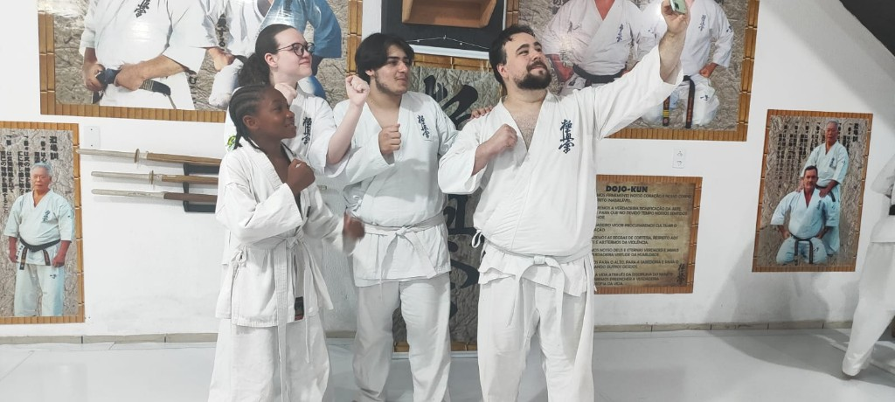
Professor de Karate Kyokushin. Filiações oficiais: FGKKO (Federação Gaúcha de Karate Kyokushin Oyama) e CBKKO. Aulas em Alvorada/RS na AOTJJ e em Porto Alegre na Star Fitness — Instagram @senseiwilliamdesouza.
Quando eu era pequeno, comecei a gostar de lutas na escolinha infantil onde ficava enquanto minha mãe trabalhava. Foi ali, aos 5 anos de idade, que tive meu primeiro contato com a capoeira. Embora eu não tenha seguido nessa modalidade, na época foi um grande diferencial na minha vida. Eu gostava muito de participar das aulas e aprender cada vez mais. No entanto, com minha ida para a escola e o encerramento do projeto no local, acabei me afastando da arte.
Quatro anos mais tarde, quando comecei no karatê, eu já era uma criança quieta e tímida na escola. Lembro que inicialmente fui procurar judô, mas, ao ver o karatê na academia, minha mãe conta que meus olhos brilharam. Decidi fazer uma aula experimental e, logo depois, iniciei meus treinos no karatê de combate, aos 9 anos de idade.
Nesse período, eu já enfrentava problemas de bullying na escola por conta do meu sobrepeso. Foi então que minha mãe decidiu procurar um esporte que pudesse me ajudar a desenvolver autoconfiança, socialização e também contribuir para minha saúde, inclusive com a perda de peso, conforme orientação médica. Além disso, havia a intenção de que eu aprendesse autodefesa.
Filho de pais separados, encontrei nas artes marciais um caminho onde me senti acolhido. Desde então, sempre treinei com empenho e dedicação, buscando seguir o caminho do budō e cultivar o espírito de guerreiro que desenvolvi — e que procuro fortalecer todos os dias.
Aos 12 anos, três anos após iniciar no karatê, pedi para aprender a dar aulas. Eu via na arte marcial uma forma de levar apoio e compreensão às pessoas, assim como um dia eu recebi. Percebi que poderia fazer a diferença na vida de crianças e adultos, não apenas pelo esporte e seus benefícios físicos, mas também por meio da escuta, do diálogo e da orientação. No karatê, entendi que, além do corpo, também treinamos a mente.
Durante a adolescência, continuei me dedicando às artes marciais, conciliando os treinos com os estudos, trabalhos nas horas vagas e ajudando minha mãe em casa. Mesmo com as dificuldades, nunca deixei de seguir meu sonho de me tornar professor.
Ao longo da minha trajetória, tive inúmeros desafios, mas sempre agradeço por tudo, pois assim aprendemos muito mais e crescemos também. Por isso agradeço a cada pessoa que passou e a cada instante que vivi nesta jornada, a qual me ensinou a crescer. Dentro da nobre arte tive conquistas em competições de karatê, mas também conquistas muito maiores dentro de mim — e essas são as mais importantes. Afinal, nas artes marciais, não aprendemos apenas a lutar, mas a nos tornarmos mais fortes emocionalmente, resilientes e persistentes.
Hoje, sigo firme no meu caminho, dedicando-me diariamente à nobre arte. Busco sempre ser melhor do que fui ontem, dando o meu melhor em tudo o que faço e lembrando que o maior desafio está em superar a nós mesmos.
Fale direto com o Sensei William no WhatsApp sobre horários, unidades (Alvorada ou Porto Alegre) e faixa etária.
O Garyū Dojo treina em duas unidades na Grande Porto Alegre: AOTJJ (Alvorada) e Star Fitness (Porto Alegre). Chame no WhatsApp para saber dias, horários e como começar.
Chamar no WhatsApp (51) 98260-5759
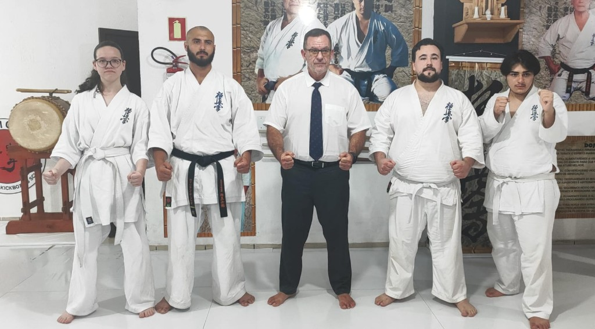
Registros de cerimônias de faixa, seminários, treinos em grupo e o dia a dia com o sensei e os alunos.
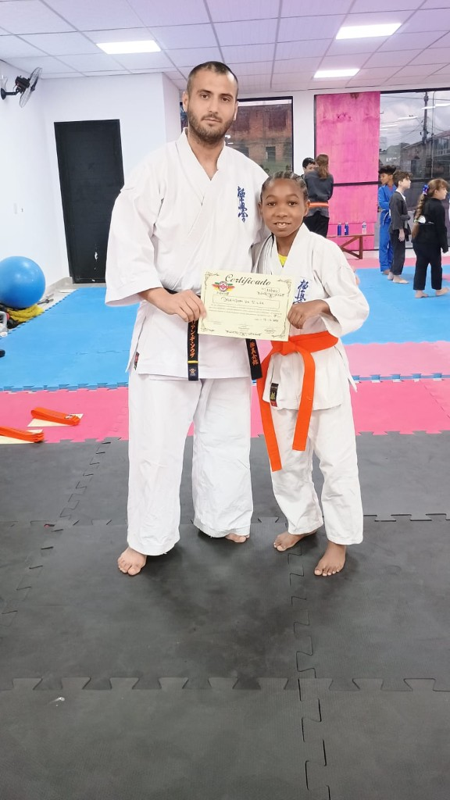
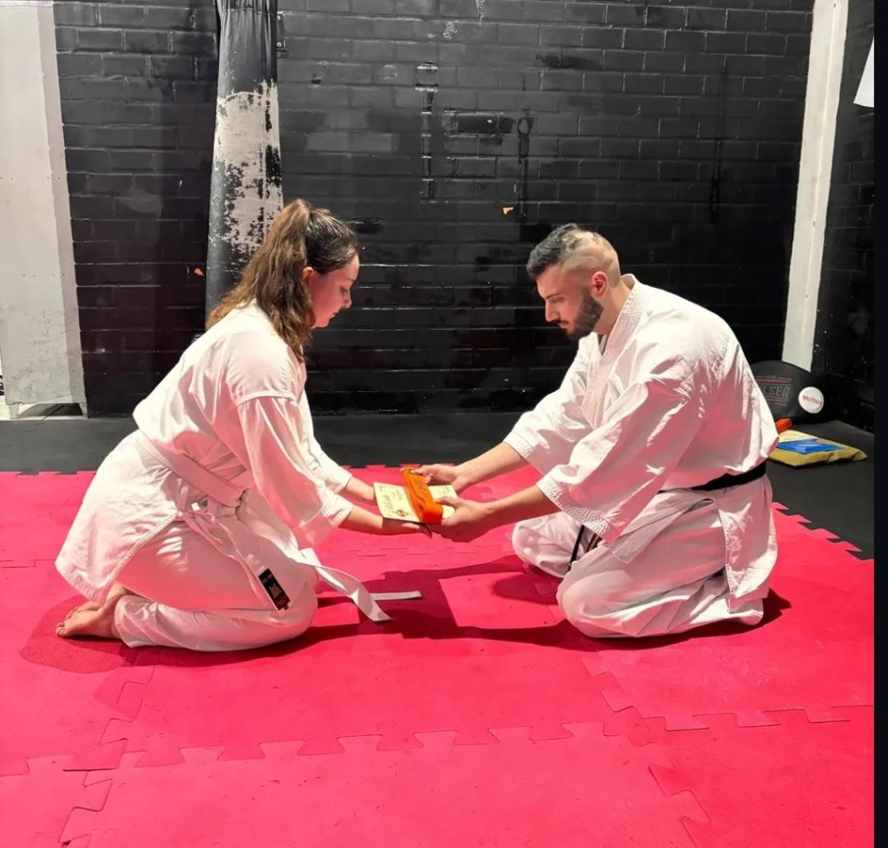
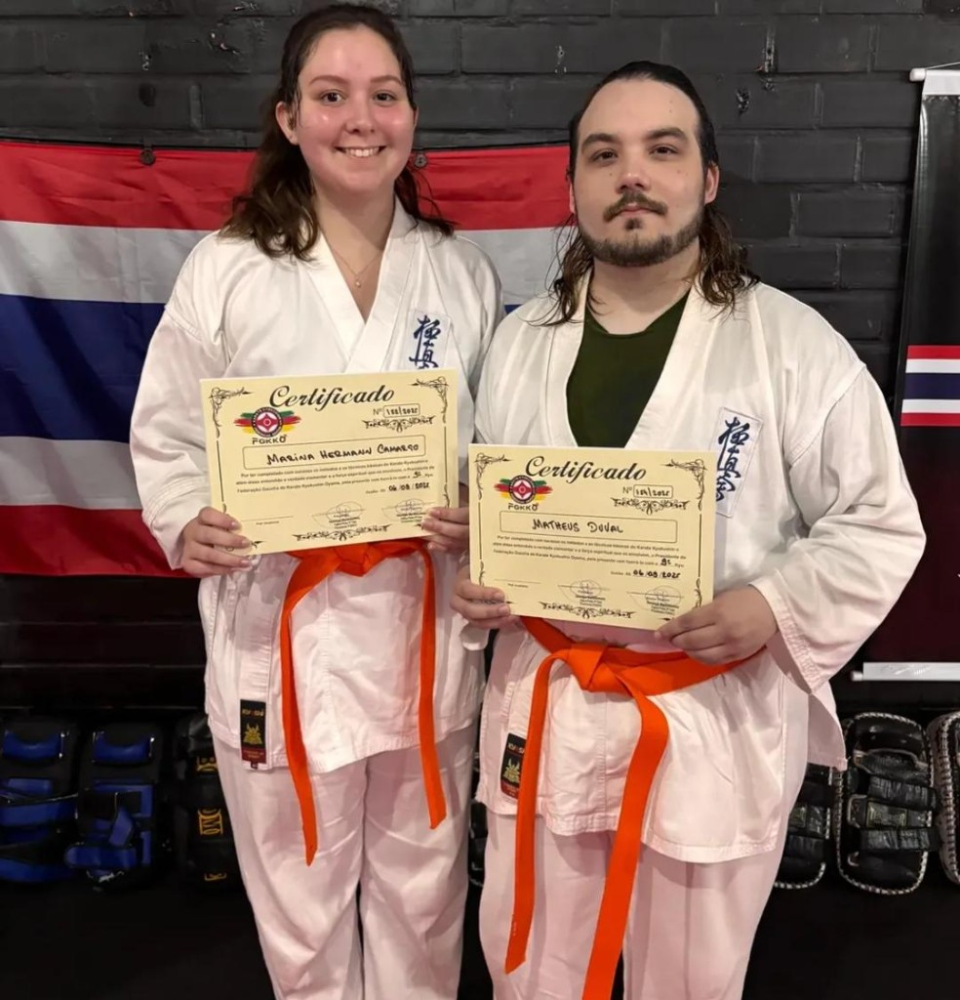
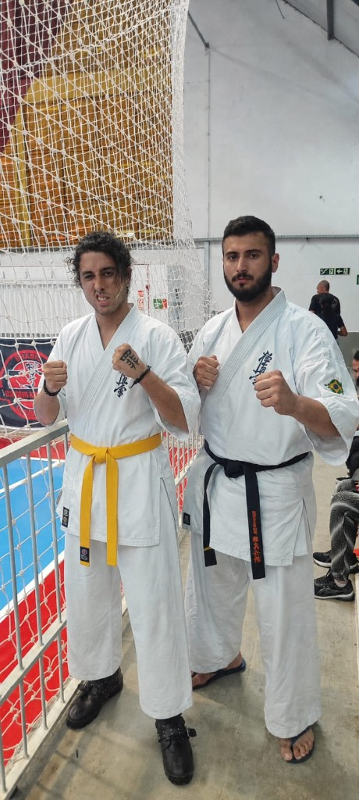
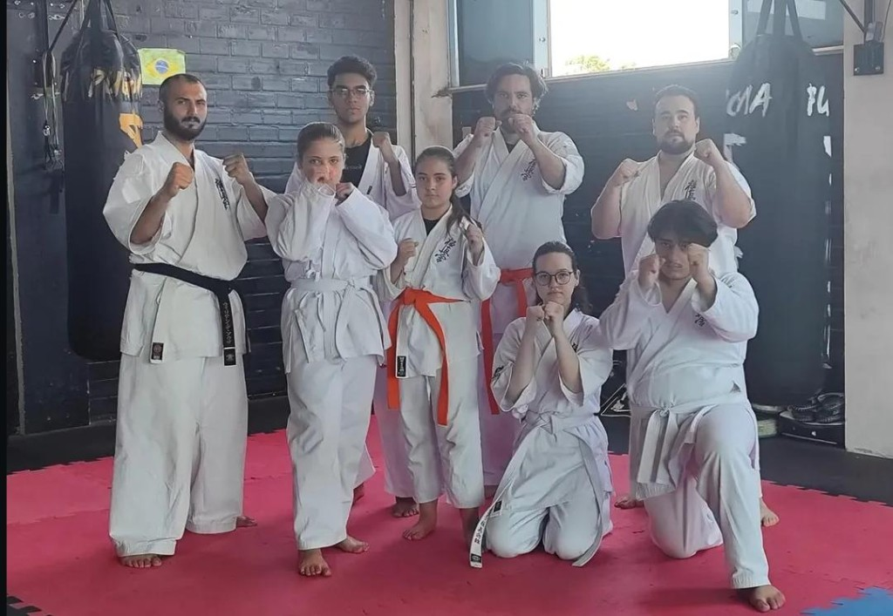
Para horários, unidades e matrícula, o WhatsApp é o canal mais ágil. Pode usar também o formulário para deixar seus dados e mensagem; o retorno será feito em contato direto com o sensei.
Clique no número para abrir o WhatsApp com uma mensagem pronta.
Filiado à @fgkko_kyokushin (FGKKO) e à @cbkko (CBKKO).